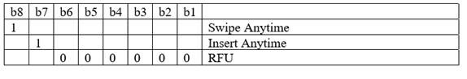

public class BroadPOSCommunicator
extends java.lang.Object
| Modifier and Type | Class and Description |
|---|---|
static interface |
BroadPOSCommunicator.DetectAnyTimeListener
Listener for detectAnyTime
|
static interface |
BroadPOSCommunicator.StartListenerCallBack |
| Modifier and Type | Method and Description |
|---|---|
static BroadPOSCommunicator |
getInstance(Context context) |
void |
startDetectAnyTime(java.lang.String detectMode,
BroadPOSCommunicator.DetectAnyTimeListener detectAnyTimeListener)
Start DetectAnyTime on BroadPOS.
|
void |
startListeningService(BroadPOSCommunicator.StartListenerCallBack startListenerCallBack)
Open communication related services in BroadPOS.
|
void |
stopDetectAnyTime()
Stop DetectAnyTime on BroadPOS.
|
void |
stopListeningService()
Stop communication related services in BroadPOS.
|
public static BroadPOSCommunicator getInstance(Context context)
public void startListeningService(BroadPOSCommunicator.StartListenerCallBack startListenerCallBack)
startListenerCallBack - the callback for open success or notpublic void stopListeningService()
public void startDetectAnyTime(java.lang.String detectMode,
BroadPOSCommunicator.DetectAnyTimeListener detectAnyTimeListener)
detectMode - The detectMode:

eg: swipeAnyTime is "10000000".detectAnyTimeListener - DetectAnyTimeListenerpublic void stopDetectAnyTime()